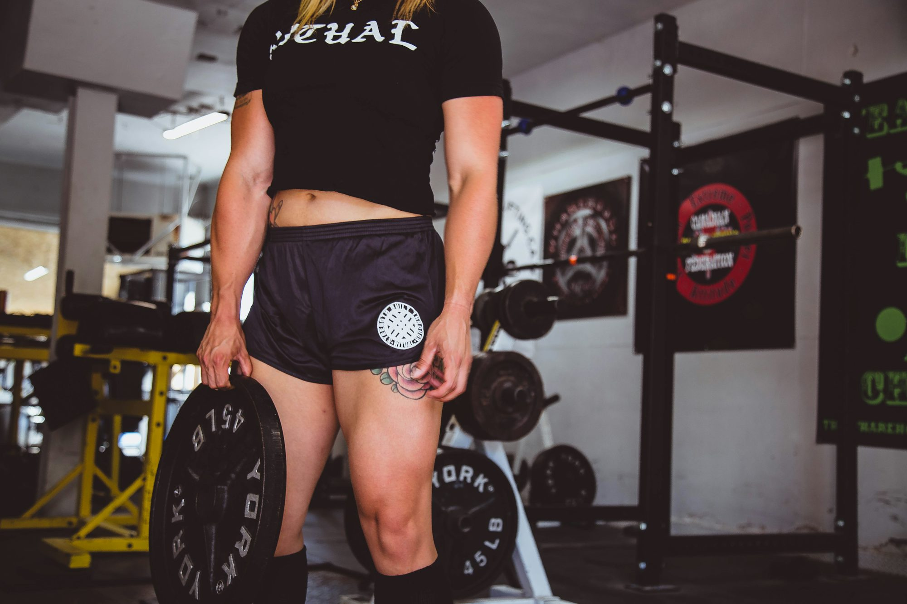

1. Set Clear Goals
The first step in maximizing your gym experience is to set clear, achievable goals. Whether your aim is to lose weight, build muscle, increase endurance, or simply improve overall health, having specific targets will guide your workout plan. Consider breaking down larger goals into smaller milestones to track your progress effectively. For example, if your ultimate goal is to run a 5K, start by setting weekly distance targets.
Writing down your goals can also serve as a powerful motivator. Keep them visible—on your phone, in your gym bag, or on a bulletin board at home. Regularly revisiting your goals can help keep you focused and motivated, especially on days when your enthusiasm wanes.
2. Create a Consistent Schedule
Establishing a consistent workout schedule is essential for success in the gym. Consistency not only helps develop a habit but also ensures that you allocate sufficient time for various fitness activities, including strength training, cardio, and flexibility exercises. Aim for at least three to four sessions per week, adjusting the frequency based on your fitness level and goals.
To create an effective schedule, consider your daily routine and identify time slots that work best for you. Whether you prefer early morning workouts, lunchtime sessions, or evening visits, choose times when you feel most energetic. Setting reminders on your phone or marking workouts on your calendar can help you stay accountable and committed to your fitness journey.
3. Warm-Up and Cool Down
Before diving into intense workouts, it’s crucial to prioritize warming up your muscles. A proper warm-up prepares your body for exercise, reducing the risk of injury and enhancing performance. Spend at least 5 to 10 minutes performing dynamic stretches or light cardio to increase blood flow and flexibility. This not only warms up your muscles but also improves your range of motion.
Similarly, cooling down after your workout is essential for recovery. Take time to stretch and bring your heart rate back to its resting state. Cooling down helps prevent muscle soreness and can improve overall recovery, allowing you to bounce back more quickly for your next session. Incorporating both warm-up and cool-down routines into your workouts is a simple yet effective way to enhance your gym experience.
4. Stay Hydrated and Nourished
Hydration plays a crucial role in your gym performance and overall health. Drinking enough water before, during, and after your workout helps regulate body temperature, lubricate joints, and transport nutrients to cells. Aim to drink water regularly throughout the day, and consider having a water bottle handy during your gym sessions.
Additionally, proper nutrition is vital for fueling your workouts. A balanced diet rich in carbohydrates, proteins, and healthy fats provides the energy needed for optimal performance. Consider having a small snack, such as a banana or a protein bar, before workouts for an extra energy boost. Post-workout, refueling with a protein-rich meal or snack can aid recovery and support muscle growth. By prioritizing hydration and nutrition, you'll enhance your gym experience and support your fitness goals.
5. Explore Different Workouts
To keep your gym routine fresh and engaging, don’t be afraid to explore different types of workouts. Variety not only prevents boredom but also challenges your body in new ways, leading to better overall results. Experiment with various training styles, such as circuit training, high-intensity interval training (HIIT), yoga, or even dance classes.
Many gyms offer group classes that cater to different fitness levels and preferences. Participating in these classes can also provide an opportunity to meet new people and build a sense of community. Additionally, consider incorporating outdoor workouts or home-based exercises on days when you can’t make it to the gym. The more diverse your routine, the more likely you are to stay motivated and engaged in your fitness journey.
6. Invest in Quality Gear
Having the right gear can significantly enhance your gym experience. Invest in quality workout clothing and footwear that provides comfort and support. Proper athletic shoes are essential for preventing injuries and improving performance, especially during activities that involve running or jumping.
Consider purchasing other accessories that can enhance your workouts, such as resistance bands, yoga mats, or foam rollers. These tools can provide added variety and support in your routine. While it’s important to prioritize comfort and functionality, don’t forget to choose items that reflect your personal style, making your gym visits more enjoyable.
7. Find a Workout Buddy
Working out with a friend can make your gym experience more enjoyable and motivating. Having a workout buddy not only provides accountability but also creates a support system that encourages you to push through challenging workouts. Plus, sharing your fitness journey with someone else can foster a sense of camaraderie and make gym sessions more fun.
Choose a workout partner with similar fitness goals and schedules to maximize the benefits of exercising together. You can motivate each other, share tips, and even try new workouts as a duo. If you don’t have someone in mind, consider joining group classes or fitness clubs where you can connect with like-minded individuals who share your passion for fitness.
8. Track Your Progress
Tracking your progress is essential for understanding how far you’ve come and identifying areas for improvement. Keeping a workout journal or using fitness apps can help you log your workouts, track weights lifted, and monitor progress over time. This accountability encourages consistency and allows you to celebrate milestones, reinforcing your commitment to your fitness goals.
Additionally, consider taking progress photos or measurements to visualize changes in your body over time. This can be particularly motivating during periods when the scale may not reflect your efforts. By consistently tracking your progress, you’ll gain valuable insights into your fitness journey and remain motivated to continue pushing yourself.
9. Stay Positive and Patient
Lastly, maintaining a positive attitude is crucial for success in the gym. Fitness journeys can be filled with ups and downs, and it’s essential to be patient with yourself as you navigate challenges and setbacks. Remember that progress takes time, and everyone’s journey is unique. Embrace the process, celebrate small victories, and stay focused on your long-term goals.
Surround yourself with positive influences, whether through supportive friends, motivating fitness communities, or uplifting fitness content. Cultivating a positive mindset not only enhances your gym experience but also translates into other aspects of your life. The more you celebrate your efforts, the more motivated you’ll be to continue pursuing your fitness goals.
Conclusion
Maximizing your gym experience is all about finding what works best for you. By setting clear goals, maintaining a consistent schedule, prioritizing hydration and nutrition, and exploring various workouts, you can create a fulfilling fitness journey. Remember to invest in quality gear, track your progress, and surround yourself with positivity. With these practical tips, you’ll be well-equipped to make the most of your time at the gym and achieve your health and fitness aspirations.